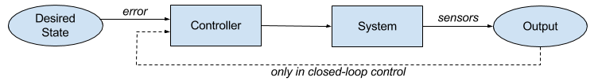
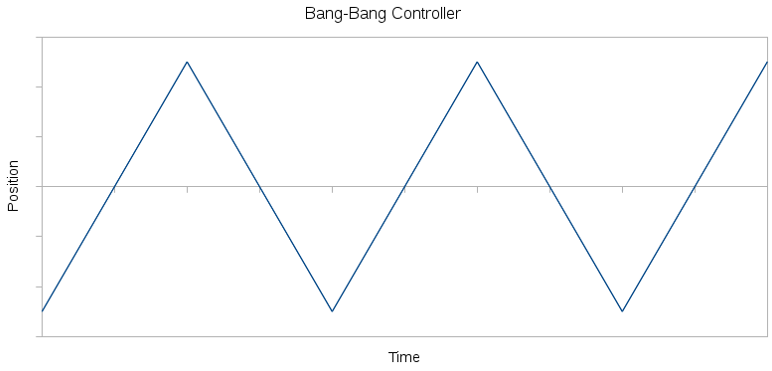
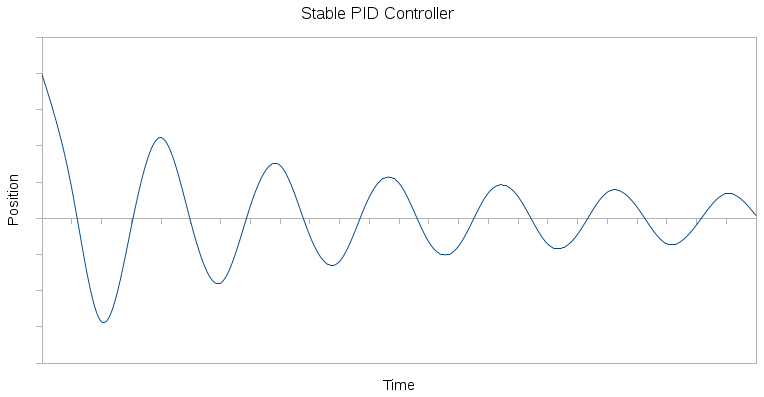

2016 BWSI Report
Haicheng Charles Zhao
The 2016 MIT Lincoln Laboratory Beaver Works Summer Institute (BWSI) was a four-week program that sought to expose high school students, mostly rising seniors, to the rapidly advancing field of autonomous vehicles. The primary component of the program was programming a RACECAR (Rapid Autonomous Complex-Environment Competing Ackermann-Steering Robot) within teams of five to six. Our RACECARs were approximately 1/10th the size of an actual car and were mounted with various advanced sensors. The program also included daily seminars in which prominent speakers described their work and explained robotics concepts. For example, several of these speakers were from the NASA Jet Propulsion Laboratory. In addition to the technical side of BWSI, the program also emphasized communication skills through bi-weekly communication seminars. In these, we learned how to effectively cooperate in a team on complex, multifaceted projects.
Weekly Experiences
We focused on a different aspect of programming autonomous vehicles during each of the four weeks. In the first week, we became familiar with the Robot Operating System (ROS) and how to control our cars. In week two, we learned about perception and image processing. In week three, we learned about autonomous exploration and obstacle evasion. Lastly, we learned about localization and mapping.
Week 1
The main goal of the first week was to gain familiarity with the RACECARs and with the Robot Operating System (ROS). The week concluded with a wall-following drag race.
ROS is an open source framework which provides many tools and libraries that greatly ease robot software development (http://www.ros.org/about-ros/). It is well-established and used in industry. For example, the NASA/GM Robonaut 2 aboard the International Space Station runs ROS (ROS book). ROS's guiding principle is modularity, which is one of the reasons for its use in complex projects. A ROS package consists of nodes, which are simply programs, that perform tasks and communicate to each other through messages. This peer-to-peer structure is what gives ROS its modularity, which greatly simplifies delegating work and testing.
Kyle Edelman from the NASA Jet Propulsion Laboratory (JPL) gave two lectures on control systems. The goal of a controller is to bring the error, which is calculated given the desired state and the current state, to zero. In open-loop control, the controller only takes in the desired state as input, while in closed-loop control, the controller also takes in output from sensors as input. In other words, closed-loop control takes feedback whereas open-loop control does not.
Edelman explained two different controllers: bang-bang and proportional-integral-derivative (PID). Bang-bang is the simplest type of controller, but it may never reach a steady state. A bang-bang controller consists of several discrete groups of inputs that each produce a certain, hard-coded output. A robot whose direction is controlled by a bang-bang controller may produce the following position vs. time graph:
On the other hand, PID controllers produce an output based on the error, the integral of the error with respect to time, and the derivative of the error with respect to time. Formally:
mathwhere Kp, Ki, and Kd are nonnegative coefficients for the proportional, integral, and derivative terms, respectively. The proportional term is the main term, the integral term helps to drive the error to zero more quickly, and the derivative term dampens the controller to provide stability. In unstable systems, the error gradually increases as the controller continuously overshoots the desired state. An unstable system may produce a graph like the following:

On the other hand, a properly tuned PID controller would produce results like the following, eventually resulting in a steady state:
The coefficients are generally tuned empirically. To do so, initially only have a proportional term and increase Kp until the system becomes unstable. Then lower Kp so that the system becomes stable and add an integral term, increasing Ki until the system reaches a steady state in reasonable time. Then add a derivative term, increasing Kd until the system is stable.
The challenge for the week was to use our knowledge of control systems and ROS to program a wall-follower. Our wall-follower used data from a Lidar as input. The Lidar gathers data along a 2-dimensional plane and returns a list of ranges, which are distances to objects. In total, it returns 1081 evenly spaced ranges over 270°, essentially giving points in polar coordinates. One problem was to figure out the car’s perpendicular distance to the wall. We had to consider that the car would not always be parallel to the wall, and in fact could likely be at quite a steep angle to the wall. We first tried to come up with a solution involving triangulation. However, a team member realized that the car’s perpendicular distance to the wall is simply the closest range returned. Thus, our program was able to determine the car’s perpendicular distance to the wall much more simply and perhaps more reliably than most other teams.
The next part was programming a controller for the car’s steering angle. We started off creating a bang-bang controller that worked but was far from optimal as it drove from side to side. We then created a PID controller. We needed to tune the PID values such that the car would stay reasonably close to the wall without ever hitting it. Through experimentation, our coefficients were Kp=0.5, Ki=0.1, Kd=0.05. Our car was successfully able to follow a wall, along with following curves along the wall.
Lastly, we created a safety node. This node listened to the Lidar’s scan topic and backed up the car if it came too close to an object. Using a sliding window algorithm, the safety node was able to discern narrow objects such as poles while also accounting for noise in the Lidar’s data. The sliding window algorithm searches for strings of similarly far away points and detects these as objects, but accounts for noise by allowing for some discontinuity along the objects. The safety node was left constantly running, as it would override all the other nodes and prevent the car from crashing into objects.